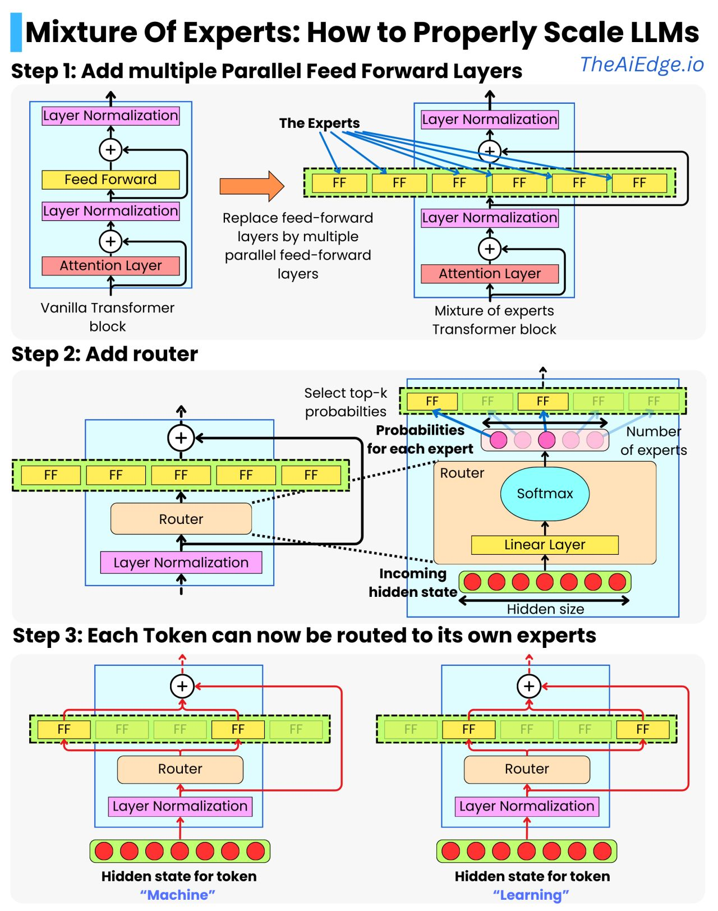

Estimated reading time: 2 minute(s).
Mixture of Experts: How to Properly Scale LLMs
These days, you blink, and there are 20 new Machine Learning techniques or tools you need to learn about! The Mixture of Experts architecture is by no means a new technique, but it has now become the default strategy for scaling LLMs. I remember reading about it a couple of years ago and dismissing it as "yet another LLM paper that probably doesn't matter". Well, now it matters! Most larger LLMs are likely to use that strategy moving forward!
The typical transformer block is a succession of an attention layer, layer normalization, feed-forward layer, and another layer normalization. The strategy to scale transformers has been to just add more transformer blocks one after the other. The idea with MoE is to scale "horizontally" by adding more parallel feed-forward layers in each of the blocks. Those are the "experts".
Prior to the experts layer, we add a router so that each token only goes through a few experts. For example, we can have 64 experts, but with the token's hidden states only going through 2 of those. This ensures diverse learning while minimizing the computational load and, therefore, latency at inference time.
The router is just a linear layer that takes a hidden state and produces a vector with as many entries as there are experts. By using a softmax transformation, we get a probability for each of the experts. We can now use those probabilities to select the top-k experts and build a weighted average of the output of the selected experts. For example, if we take the top 2 experts:
new state = P(FFN_1) * FFN_1 (hidden state) + P(FFN_2) * FFN_2 (hidden state)
Even with only the top-2 experts, the new output hidden state can represent a much richer set of information learned by the different combinations of experts. This also provides a very natural way to distribute the model computations across multiple GPU machines. Each machine can hold multiple experts, and the computations of the different experts can happen in parallel on the different machines.
However, training a MoE model is not trivial as it induces a lot of training instabilities. One difficulty is ensuring each expert sees enough data to learn the relevant statistical patterns. The typical strategy is adding a term to the loss function to provide a balanced data load across experts.
Google has been leading the charge on that front, so these are worth a read:
- ST-MOE: Designing Stable and Transferable Sparse Expert Models
- Switch Transformers: Scaling to Trillion Parameter Models with Simple and Efficient Sparsity
